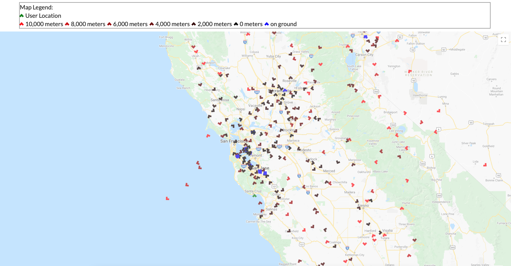
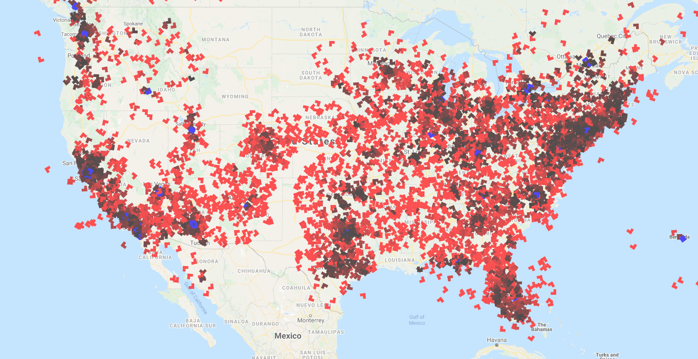
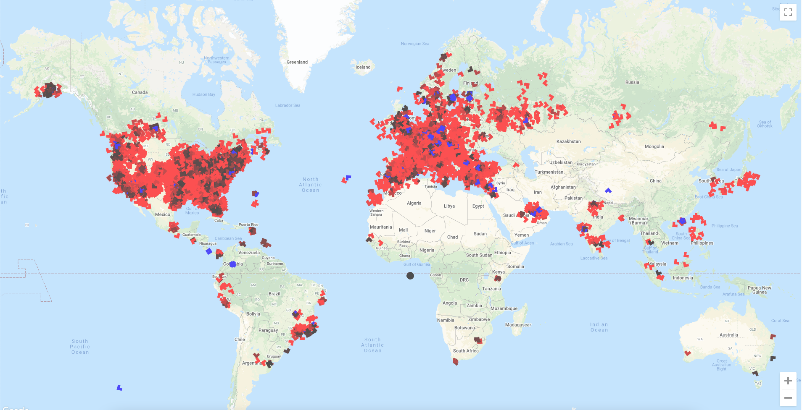
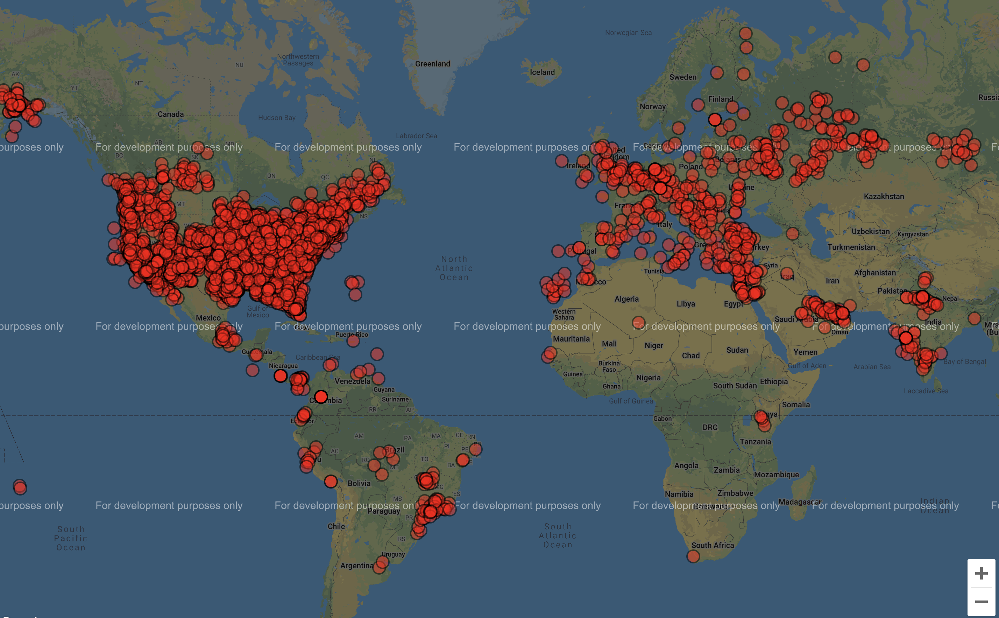

Dev log for the Air Traffic App, a React web app that plots live airplane positions. Most recent link: Air Traffic App



New update with the Air Traffic App includes planes showing their direction as a result of making the plane object into triangles and then doing transformation(rotation) on the object per each planes directional data. The Planes also show elevation by different shades of red by doing rgba(variable,0,0,1) when variable=(elevation*max_color_hue/highest_elevation). Another quality that was implemented was if the plane was landed which was represented as a boolean value in the data.
My favoite thing that I implemented so far was that when you hover on each one of the react plane objects I used a "onMouseEnter()" and "onMouseLeave()" event to have a box apear with data of the planes numerical registration ID, latitude, longitude, elevation(m), and speed(m/s).
Next steps in the Air Traffic App will be implementing the app to display airports which will likely require another API, database, or JSON file with the info. Additionally I am in the progress of adding heatmaps to replace plane objects when an button is clicked which would show an interesting perspective of air traffic. Lastly, I would also like to implement as an extra but not required feature of a unique speed and elevation change distinction such as another color, outline, or animation (not actually sure what I plan to do yet) and I would like to display trails of planes (past flight) which will likely be small white lines or dots.


New update with the Air Traffic App include after researching for some time using the OpenSky Network API which utilizes my original choice of API the ADS-B API however this API requires payment so I went with the free alternitive because I am doing this just for fun/practice/hobbie.
The OpenSky Network API which relies on ADS-B API, tracks each aircraft (transponder) to a unique address (ICAO 24-bit) which is an aircraft's unique identifier (sometimes called mode-s and is the aircraft's certificate of registration). The API then gathers the elevation, latitude, longitude, direction, and other characteristics from other APIs and volenteers across the world who supply the data through Raspberry Pis with an SDR and Antenna, so military and other filtered aircraft can be often seen (public tracking).
With the API I was able to access each aircraft's icao24(Unique ICAO 24bit address of transponder), callsign, origin country, time per position, last contact, longitude, latitude, latitude(barometer and geo), status if its landed, velocity(m/s), direction, rate of elevation change, sensors, squawk, spi(special purpose indicator), and what sorce is tracking it. For the time being I only got the the aircraft location to be displayed.
Next steps in the Air Traffic App will be to implement more of the data onto the air traffic display. The data I plan to use first will be to change the shade of the dots based on elevation diffrences, show direction by using an object other than a circle and the data I have, have an indicator if the plane has landed.

The Air Traffic App first started as a progression from the Geolocation App. I started the Geolocation App as a way to practice my newly founded skills in React and Javascript while practicing working with APIs.
The current version uses the Geolocation API by Mozilla which asks for your location permission and then returns it as a latitude, longitude, and accuracy based on your your using your computer or phones GPS if available. If not avaliable, it uses its WIFI signal. If using a mobile signal, the position is triangulated by cell towers to work out the closest latitude and longitude it can determine.
The App also works with the google-maps-react API which is a subset of google maps API but, uses a smaller portion of the full API and allows for react objects to be added (will be important when planes need to be added).
Although this was the end of the Geolocation App, I used the Geolocation code to start a Plane Traffic App which will need plane location data for the next step.